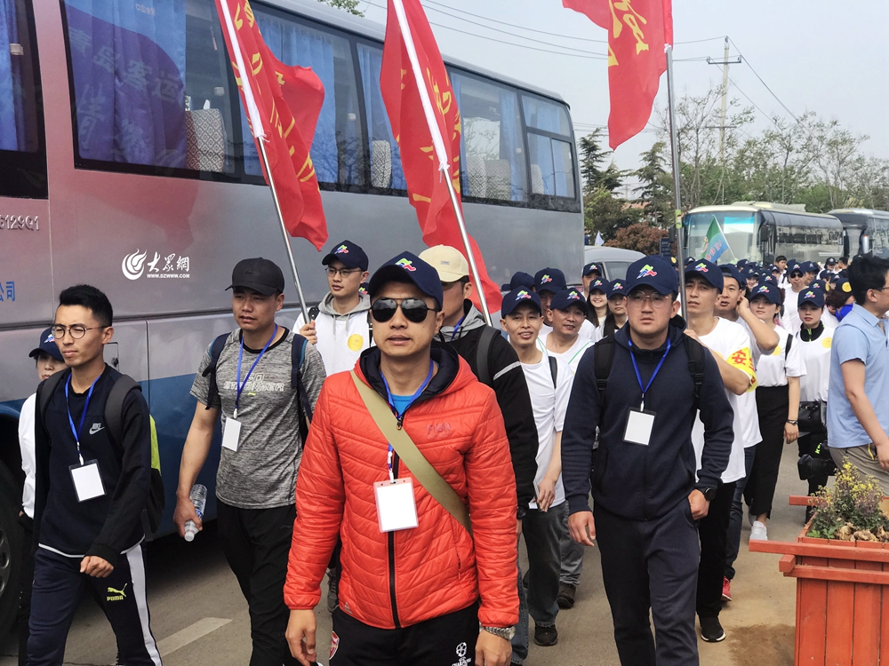

青岛全民健身登山节今日启动 预计30余万人外出参与
2018-04-22
15:23:00
大众网
大众网青岛4月21日讯（记者 刘宇昕）4月21日-22日，2018年全国群众登山健身大会开幕式暨“体彩杯”青岛市全民健身登山节活动在青岛市全面展开，这是全国群众登山健身大会开幕式第九次落户青岛，青岛也成为该项节庆活动创办以来承办开幕式最多的城市。本届登山节活动，采用全市联动的办会模式，在城阳区设一个主会场，各个区市设立9个分会场，共开放山头（公园）、景区20处，为广大市民提供就近休闲登山健身服务。登山节期间预计30余万人外出登山健身，沐浴春光。

各组登山队员出发
4月21日上午，2018年全国群众登山健身大会开幕式暨“体彩杯”青岛市全民健身登山节启动仪式在城阳区毛公山风景区举行。城阳区政府区长李红兵致开幕词，并对城阳区全民健身等工作做了简单介绍；国家体育总局登山运动管理中心户外部副主任彭爱琴同志宣读了《关于表彰2017年全国群众登山健身大会先进单位的决定》；国家体育总局登山运动管理中心副主任、中国登山协会秘书长张志坚，向我市授2018年全国群众登山健身大会会旗；最后，青岛市体育局局长纪高尚向城阳区颁发2018年青岛市全民健身登山节突出贡献奖奖牌。
在开幕式期间，还进行了内容丰富的全民健身展示和体育彩票公益宣传活动，包括由城阳区组织有关单位进行的健美操、持杖健身操、健身秧歌、花样跳绳表演、武术表演、花式篮球表演等全民健身项目展示，以及由青岛市体育彩票管理中心组织的体彩公益宣传等。 据悉，毛公山景区位于城阳区惜福镇街道青峰社区所在地，位处国家著名风景区---崂山的西麓，风景优美，旅游资源丰富，森林覆盖率达70％以上。毛公山因其远观酷似伟人毛主席身着中山装巍然站立、眺望远方的样子而得名，目前已成为具有革命特色的红色文化景区，吸引国内外旅游爱好者的关注，并成为青岛市乃至山东省新农村建设和旅游开发的典范。